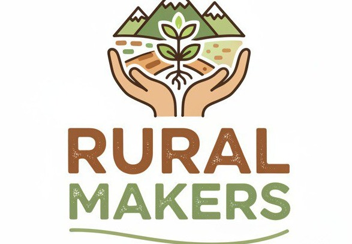

Rural Makers Tejiendo Facenderas
+Por: Asociación Indira
Aprendiendo, cooperando y cocreando conjuntamente, sembrando innovación, arte y vida en los pueblos.
- € 0 conseguido
- 27/10/2025 creado el
0% Financiado
-
Obtenido
€ 0
-
Mínimo
€ 10.700
-
Óptimo
€ 55.000
-
0 Cofinanciadores
-
La URZ